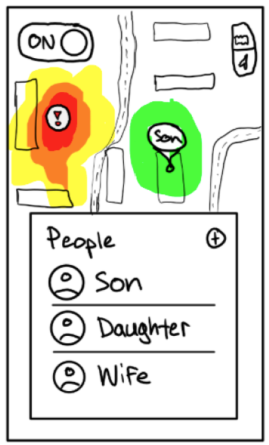
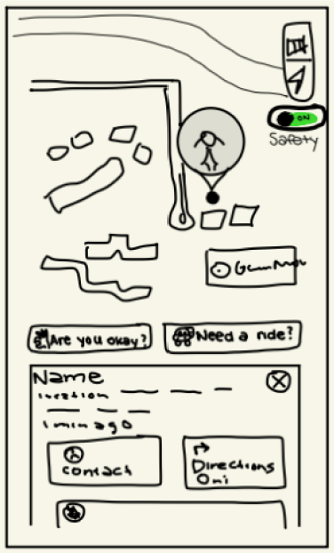
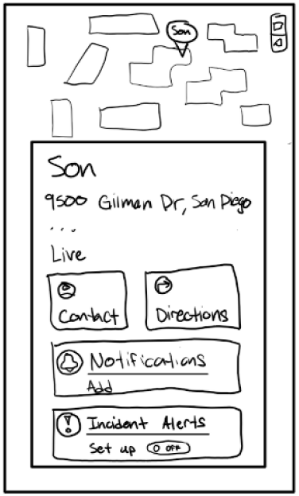
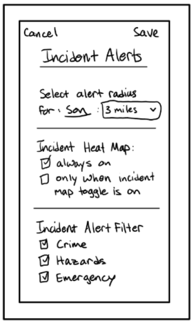
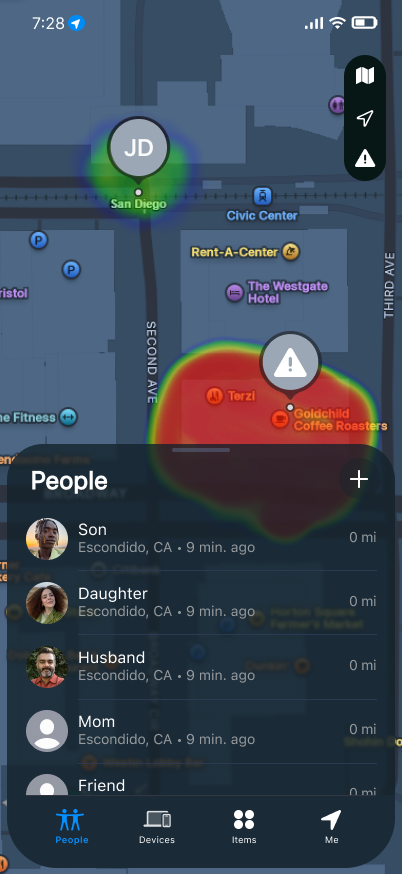
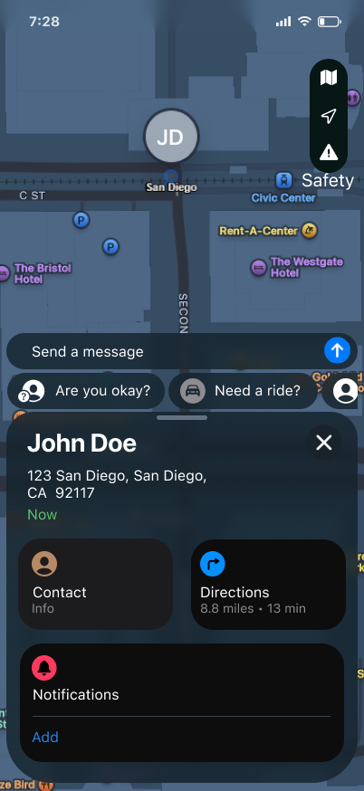
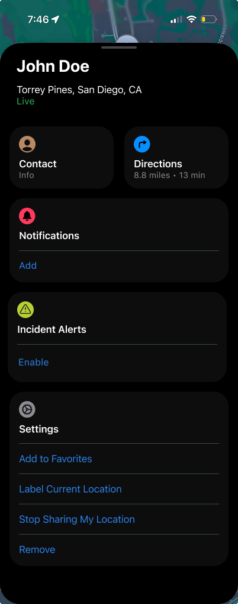
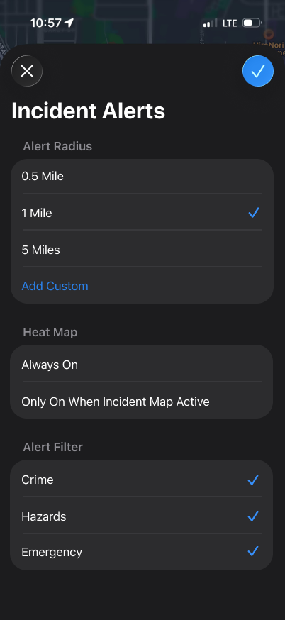
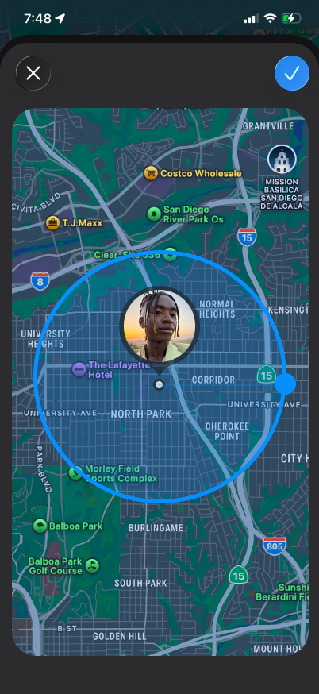

COGS 127 · UX Case Study · Apple FindMy Extension
Your kid is nearby.
But is nearby safe?
Redesigning what "location sharing" actually means - from a passive dot on a map to a real-time safety layer that gives parents the context they need most.
Overview
Several of us on this team grew up watching our parents spiral into panic - frantically texting us after catching a news alert, not knowing if we were anywhere near whatever chaos had just unfolded. I knew that feeling from the other side: your phone blowing up while you're trying to reassure a parent who only has a blinking dot on a map and absolutely zero other information.
That's the gap. FindMy tells you where someone is. It tells you nothing about whether that place is safe. For parents of teens and young adults, that distinction is everything.
Our project proposes a native extension to Apple's FindMy that adds a real-time safety layer on top of location sharing. Think crime reports, hazard alerts, and incident notifications tied directly to your family member's current location - not the entire city. A heat map radiating around a person's pin. Alerts that evolve as situations unfold, not a single push notification dropped into the void.
Problem Statement
Parents of teens and young adults (ages 13-22) rely on location sharing apps to monitor their children's safety - but current tools only show where their child is, not whether that location is actually safe. When incidents happen nearby, parents are left anxious and without options, and their child may not be reachable right away.
We chose to build on FindMy specifically because it's already there: free, pre-installed, trusted by millions. We don't need to convince anyone to download another app - we meet families where they already are and make a tool they already use dramatically more meaningful.
From a business perspective, the global public safety market was valued at $511.1 billion in 2024. Citizen's 10M+ users prove the demand for exactly the kind of contextual safety information that FindMy currently lacks. Bridging those two worlds - existing platform trust and real-time safety data - is a meaningful, commercially viable opportunity.
User Research
We interviewed parents and guardians who actively use location tracking apps to monitor their teens or young adults. We deliberately avoided recruiting people already sold on our idea - we wanted to understand actual behavior, not just confirmation of a hypothesis.
Recruiting criteria: parent or guardian of a child aged 13-22, currently using FindMy, Life360, or similar. Here's who we spoke with:
Father of a 22 and 27-year-old. Uses FindMy + PulsePoint (a separate police/fire alert app). Checks location situationally - when picking up his son or when something appears in the news.
Mother of two daughters, ages 19 and 21. Checks location every 30 minutes. Uses no safety apps - relies entirely on FindMy, texting, and calling.
Mother of a 13-year-old. Monitors every 30 minutes during school or outings. Gathers safety info from the news, social media, and word of mouth from friends.
Parent of a 16 and 22-year-old. Uses Life360. Noted that the intensity of tracking naturally decreases as children grow into adults.
What We Found
The overarching theme: location alone creates a false sense of security. Parents could see the dot. They had no idea what was happening around it.
- Every parent described some version of the same anxiety loop - check location, text child, wait for response, repeat. Not because anything was wrong, but because the app gave them no other signal.
- One father maintained two separate apps (FindMy + PulsePoint) just to connect location to safety context. Even then, PulsePoint alerts covered his entire city, not his son's specific location.
- The "5 minutes ago" timestamp on FindMy was universally disliked. That small delay was enough to plant doubt: "Is that still where they are?"
- Parents wanted alerts that evolved - not a single ping, but ongoing updates as situations changed. "Do I need to go right now? Is it getting worse or better?"
- One parent asked for an emergency button that could simultaneously alert both family and 911, with real-time audio so they could hear what was happening.
"If something is happening in the area, the app doesn't tell me what's going on. I want to know: do I need to go right away? Is my son in danger? I want constant updates."
- Participant 1, father of a 22-year-oldThe Surprising Stuff
Things we didn't expect going in
- One dad used FindMy primarily as a navigation tool - guiding his wife through unfamiliar streets by monitoring her pin. The app had quietly evolved into a couples' GPS, not just a parenting tool.
- Trust physically decreases parental anxiety. As children age into adulthood, parents described consciously choosing to check less - because their child earned more independence. Any feature we build needs to feel respectful, not surveillance-heavy.
- One parent was texting her child for safety check-ins even with zero evidence of danger - just because the neighborhood name was unfamiliar. Uncertainty itself was the trigger, not actual risk. Our solution needed to address ambient anxiety, not just emergencies.
- One parent's older daughter had opted out of location sharing entirely for privacy reasons - yet the parent still worried constantly. We hadn't anticipated designing for families where tracking isn't even an option.
How research shaped our directionGoing in, we assumed parents mainly wanted alerts for dangerous events. What we learned was subtler: parents want ambient reassurance, not just emergency pings. The product needs to answer "is everything probably fine?" just as much as "something is wrong right now." That shifted us from a pure alert system toward a calmer, more continuous safety layer - a quieter presence that speaks up when it matters.
We also realized the check-in behavior isn't just a workaround - it's an emotional ritual. Parents aren't checking location because they distrust the app. They're checking because the act of looking provides temporary comfort. The challenge isn't to make people check less. It's to make each check mean more.
Design
Our research made it clear: parents don't need a new app - they need a smarter version of the one already on their phone. We focused our design on a single, native-feeling user flow: setting up safety alerts directly from the FindMy person card. The entry point is already familiar. We just extended it.
From sketch to screen
We started with lo-fi sketches to map out the flow quickly before committing to pixels. The rough drawings below show our earliest thinking - the heat map on the map view, the person card with a new "Incident Alerts" entry, and the settings screen. From there we built high-fidelity prototypes in Figma that mirror the existing iOS aesthetic so the extension feels like it was always there.
Lo-fidelity sketches

People list & heat map
Person card - entry point
Alert setup sheet
Radius & filter settingsHigh-fidelity prototypes

People list & heat map
Person card - top view
Person card - scroll to new entry
Alert setup popup
Radius preview on mapUser flow: Setting up safety alerts
The flow is designed to be set up once and then work quietly in the background. Every step lives inside FindMy - no switching apps, no new accounts.
- People list & heat map. When the parent opens FindMy they see their family list and the map. If the safety layer is on, a color-coded heat map radiates around each person's pin - a passive visual cue that something may be happening nearby, before any alert has even fired.
- Person card - first view. The parent taps a name in the people list. A card slides up showing the person's name, current location, and the existing action rows: Contact, Directions, and Notifications. Familiar territory - nothing feels out of place yet.
- Person card - scrolled view. Scrolling down reveals a new row we added: Incident Alerts - sitting naturally between Notifications and Settings. An Enable button invites the parent in without demanding anything upfront. One tap to proceed.
- Alert setup popup. A modal appears where the parent can choose a preset alert radius (0.5 mi, 1 mi, 5 mi) or add a custom distance. They can also set the heat map to always show or only activate when the safety layer is enabled. Finally, they filter which incident types to monitor: Crime, Hazards, Emergency. Tapping the checkmark in the top-right confirms the setup.
- Radius preview on map. The next popup displays the map preview to show the radius ring drawn around the tracked person's current location - giving the parent an immediate, concrete sense of the coverage area they just set up. No guessing. What you configured is what you see.
Design principleEvery decision came back to one rule: meet parents where they already are. No new app, no new login, no new habit to build. We extended a screen they already open dozens of times a day - and made it answer the question they were always silently asking.